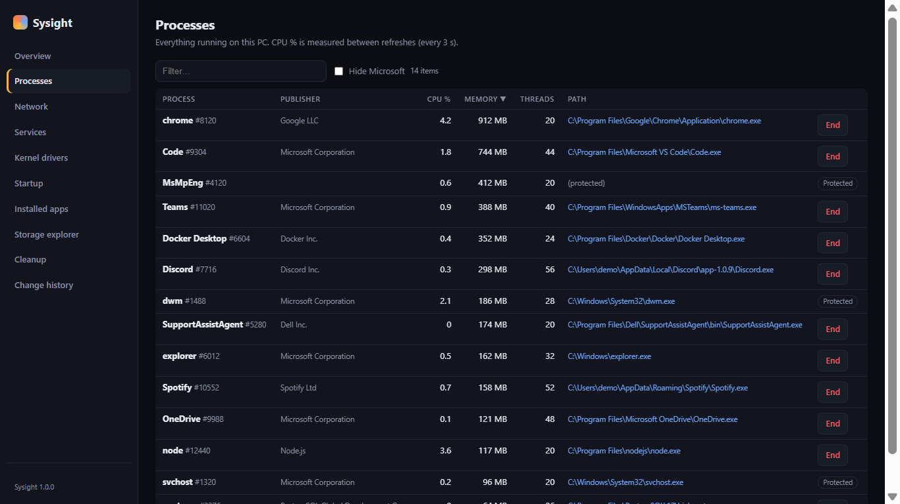
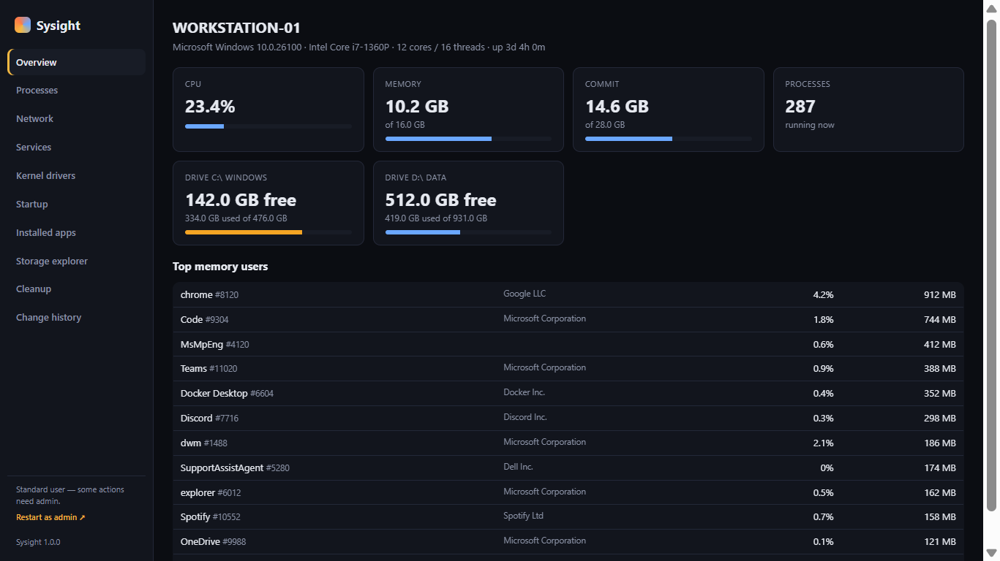
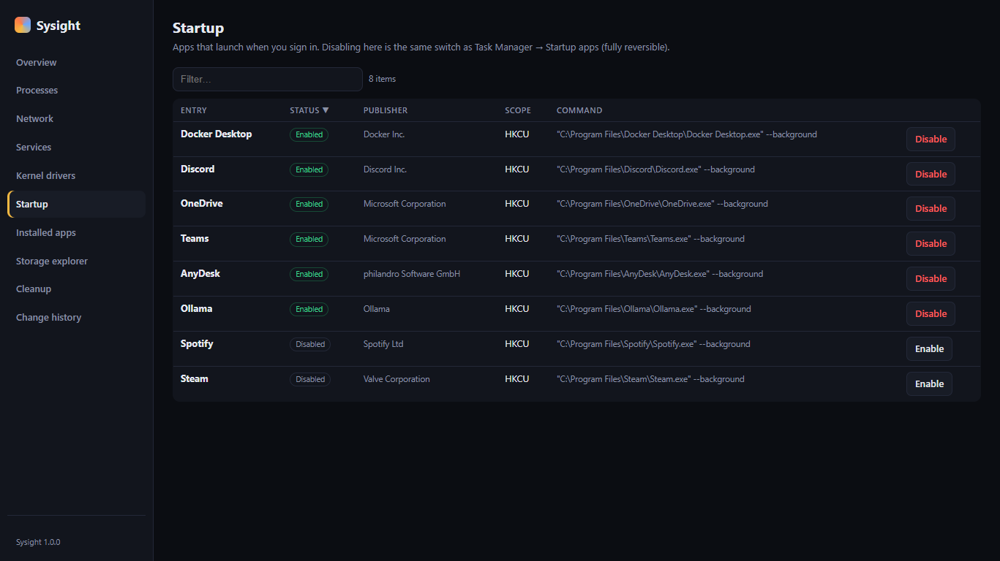
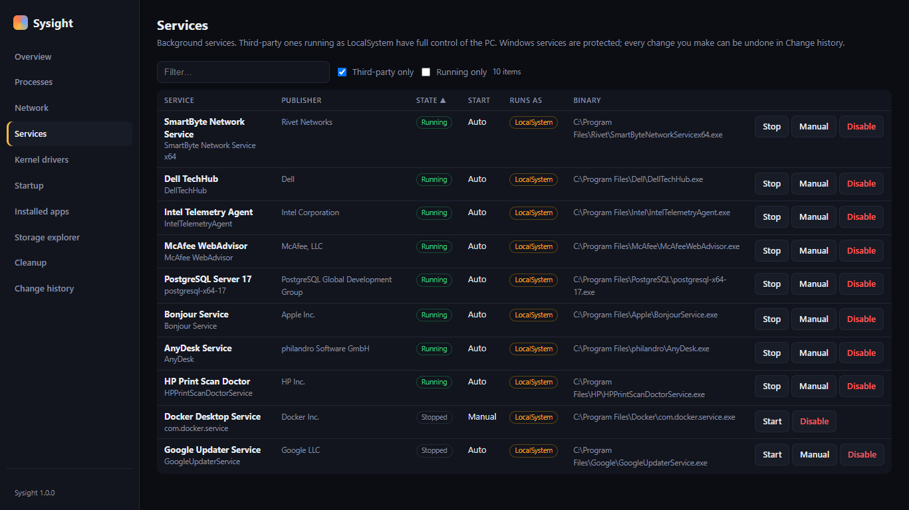
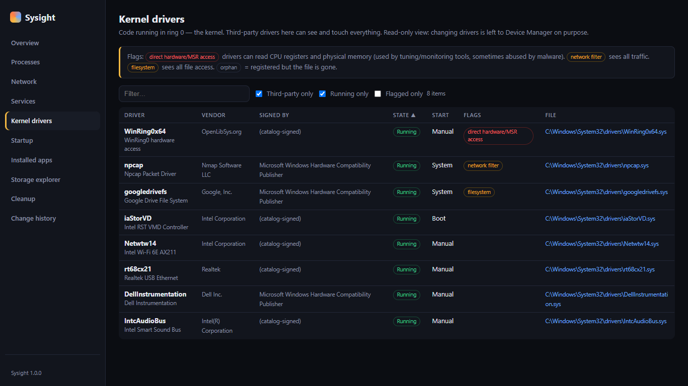
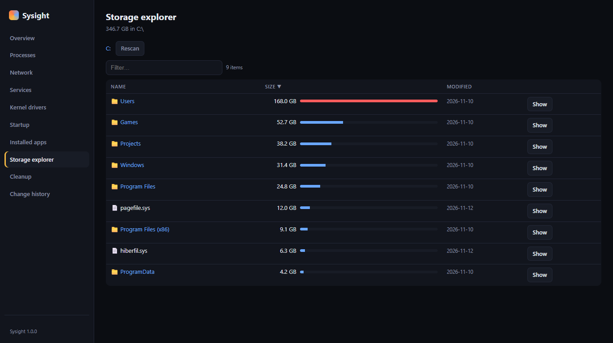
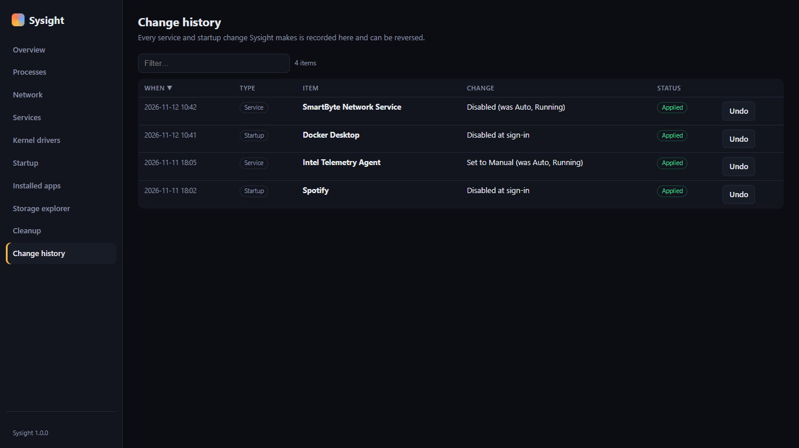

Process manager
Every running process with its publisher, CPU use, memory and file location. End misbehaving apps; key Windows processes are protected.
Sysight lists every process, service, kernel driver and startup app on your PC, shows what is filling your drive, and lets you undo the changes you make. It runs offline and collects no data.

Task Manager, Services, Autoruns-style startup checks, a disk space analyzer and a cleaner, in one window.

Every running process with its publisher, CPU use, memory and file location. End misbehaving apps; key Windows processes are protected.

See every app that launches when you sign in and switch it off with one click. Faster boot, nothing deleted.

Find third-party services running as SYSTEM in the background. Stop them, set them to Manual or disable them, then undo if needed.

Every driver loaded into the Windows kernel, with its vendor and digital signer. Flags drivers with direct hardware access, network filters and file-system filters.

Drill into any drive by folder size to find what is eating your storage, then open it in File Explorer.

Service and startup changes are logged with one-click undo. Cache cleanup clears temp files, browser caches, npm, pip and Windows Update downloads.
| What you can see or do | Task Manager | Sysight |
|---|---|---|
| Processes, CPU and memory | Yes | Yes |
| Startup apps on/off | Yes | Yes |
| Services with publisher and run-as account | Partial | Yes |
| Kernel drivers with signer and risk flags | No | Yes |
| Network connections by app | No | Yes |
| Folder-by-size disk analyzer | No | Yes |
| Cache cleanup | No | Yes |
| Undo service and startup changes | No | Yes |
Task Manager shows processes and startup apps. Sysight also shows every service with its publisher and account, every kernel driver with its signer and risk flags, network connections by app, folder sizes, and keeps a change history so you can undo service and startup changes.
Sysight blocks ending key Windows processes and changing Microsoft services, shows kernel drivers read-only, and records service and startup changes so you can undo them. Ending a process and cache cleanup can't be undone, and Sysight asks before both.
No. Sysight has no accounts, analytics or telemetry and makes no network requests. Everything it reads stays on your PC. See the privacy policy.
Open Sysight and choose Kernel drivers. It lists every driver loaded into the Windows kernel with its vendor, digital signer, start type and flags for drivers that access hardware directly, filter network traffic or watch file access.
In Sysight, open Startup and click Disable next to the app. It uses the same switch as Task Manager, and you can turn it back on from Startup or undo it in Change history.
No. It runs as a standard user and shows everything it can read. Starting, stopping or disabling services needs admin rights, which you can grant with Restart as admin.